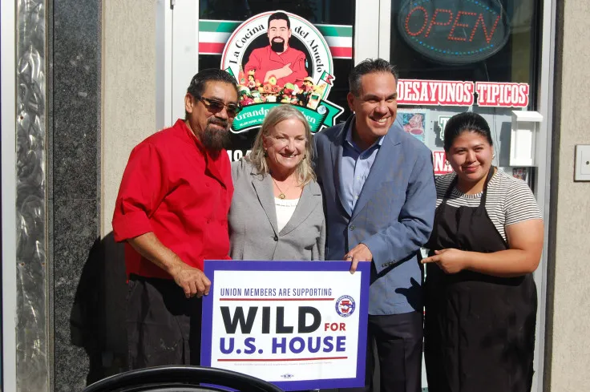
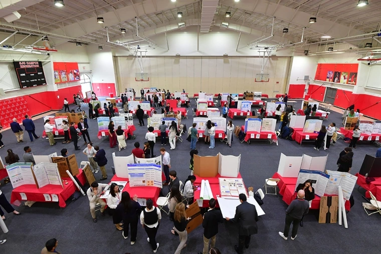

Maria Villarroel
☰
Home
About
Writing/Reporting
Resume
Contact
In the Media
Trump's 'Ludicrous' Gold Card Visa Program Fuels Oligarchy Rhetoric, Scholar Argues (Exclusive)
Latino Organizations And Officials Gather To Send a Message to Trump Administration Amid Immigration Crackdown: 'Enough'
Democrats Biggest Problem Right Now is 'The Way They Talk', Former Obama Strategist Says (Exclusive)

How Latinos Have Made Allentown, PA, The 'Center of the Universe' Ahead of November Elections
Kamala Harris closes DNC and accepts party nomination in historical moment
Walz accepts Vice Presidential nomination at DNC in optimistic speech: 'it's the fourth quarter'
St. John’s Celebrates Cultural Diversity during International Education Week

St. John’s Students Showcase Skills, Interests in Annual Research Conference
Another Hollywood Strike Could Delay Current Productions For Even Longer
Acing WFH begins with your morning
Research Projects
Ph.D. Doctoral Dissertation Proposal
JJCHC RIP 2024
Media Censorship in Venezuela: A Quantitative Report on the Relationship Between Media
Censorship and Venezuelan College Students’ Awareness of News